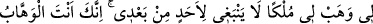

GÖĞÜ VE YERİ
BİZ BOŞ YERE
YARATMADIK
27. Göğü, yeri ve ikisi arasındakileri biz boş yere yaratmadık. Bu, inkâr edenlerin
zannıdır. Vay o inkâr edenlerin ateşteki hâline!
28. Yoksa biz, îman edip de iyi işler yapanları, yeryüzünde bozgunculuk yapanlar
gibi mi tutacağız? Veya (Allah’tan) korkanları yoldan çıkanlar gibi mi sayacağız?
29. (Rasûlüm!) Sana bu mübârek Kitab’ı, âyetlerini düşünsünler ve aklı olanlar
öğüt alsınlar diye indirdik.
30. Biz Dâvûd’a Süleyman’ı verdik. Süleyman ne güzel bir kuldu! Doğrusu o,
dâimâ Allah’a yönelirdi.
31. Akşama doğru kendisine, üç ayağının üzerine durup bir ayağını tırnağının
üzerine diken çalımlı ve safkan koşu atları sunulmuştu.
32. Süleyman: Gerçekten ben mal sevgisini, Rabbimi anmak için istedim, dedi.